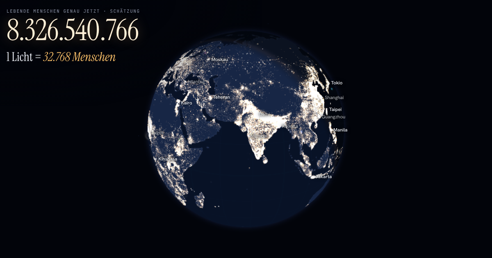

Jedes Leben ein Licht
Ein 3D-Globus im Browser, auf dem jeder Mensch ein Licht ist: die Weltbevölkerung live, dazu die Tiere, Pflanzen und Mikroben, mit denen wir die Erde teilen.

Wie viele Menschen leben auf der Erde?
Über 8,3 Milliarden (UN World Population Prospects 2024). Jede Sekunde kommen etwa vier Babys zur Welt und etwa zwei Menschen sterben; der Zähler auf dem Globus läuft live mit. Die Hälfte aller Menschen lebt in einem Kreis über Süd- und Ostasien, der nur etwa 7 % der Erdoberfläche bedeckt. Wo die Lichter sitzen, stammt aus dem 1-km-Bevölkerungsraster des Global Human Settlement Layer (Europäische Kommission, JRC).
Wie viele Tiere gibt es?
Mehr als eine halbe Trilliarde, fast alle winzig: Fadenwürmer im Boden, Ruderfußkrebse im Meer, Insekten überall. Auf jeden Menschen kommen etwa 2,4 Millionen Ameisen und sechs wilde Vögel. Nach Gewicht sind nur etwa 4 % aller Säugetiere wild, der Rest sind Nutztiere und Menschen (Bar-On et al. 2018). Jede Gruppe zeigt, wie sicher ihre Zahl ist: gezählt, Studien-Schätzung oder grobe Schätzung, mit einer Spanne, wo die Wissenschaft unsicher ist.
Von den Teilchen bis zum Rand des Universums
Ein durchgehender Zoom: von Quarks und Atomen in einem Menschen über Zellen und den Körper bis zum Globus, zum Sonnensystem und an den Rand des beobachtbaren Universums. Eine Leiste links zeigt bei jedem Schritt den Maßstab.
Touren
- Die große Tour: Menschen, leere Gegenden, Tiere, früher und heute, und du
- Die Menschheit durch die Zeit: von 4 Millionen Menschen vor 12.000 Jahren bis heute
- Alle Tiere: Insekten, Boden, Vögel, Meere und Nutztiere
- Pflanzen und unsichtbares Leben: Bäume, Pilze, Bakterien und Viren
- Große Wanderungen: Gnus, Zugvögel und Lachse, Monat für Monat
- Warum hier Leben ist: die Erde zwischen den Planeten
- Die ganze Reise: vom Rand des Universums bis in dich hinein
- Schätzen: zehn Fragen zu den Zahlen
Quellen und Datenschutz
Daten u. a. von den Vereinten Nationen, dem Global Human Settlement Layer (EU/JRC), der FAO, Our World in Data und Natural Earth; die vollständige Liste mit Lizenzen steht in der App unter „Quellen & Lizenzen“. Die Seite setzt keine Cookies und sammelt keine Daten. Mit Hilfe von KI erstellt (Claude); eine Annäherung ohne Gewähr.